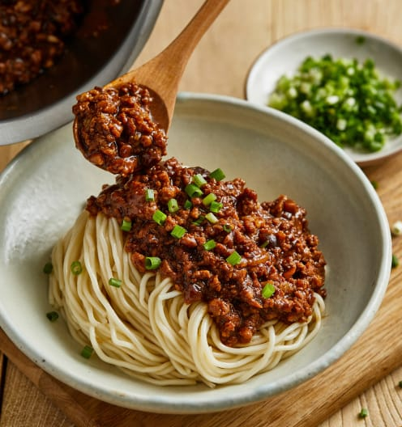
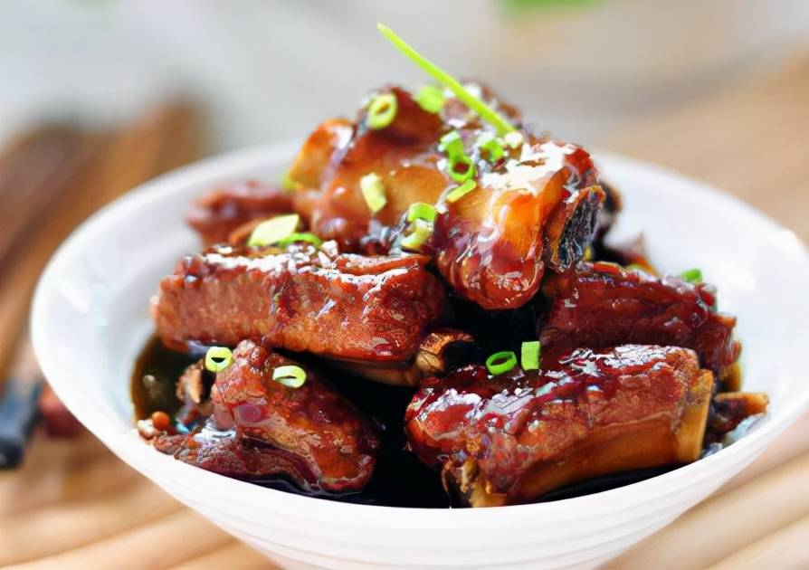

Delicious Recipes(Click it!)

Jajang Noodle
- Ingredients: minced pork; shiitake mushrooms; minced ginger; cooking wine; minced garlic; green onions; soybean paste; sugar.
- Add oil to the pot and stir-fry the minced meat, pour in the cooking wine, stir-fry for a while, then import the chopped mushrooms and soybean paste and continue to stir-fry.
- Add a little sugar, add green onions and continue to stir-fry for a while, then it will be out of the pan.
- Serve with pre-prepared noodle and enjoy the meal!

Braised Ribs
- Ingredients: pork ribs; minced giner; soy sauce; cooking wine; minced galic; green onions;
- Cut the ribs into small pieces and boil in cold water.
- After the water boils for three minutes, take out the ribs and wash them, and use kitchen paper to absorb excess water.
- Put oil in the pot and turn on a low heat, then add two tablespoons of white sugar, when the white sugar turns brown, add the ribs and stir-fry.
- Add ginger and garlic and continue to stir-fry, add soy sauce and cooking wine, stir-fry, add warm water that has not covered the ribs and bring to a boil.
- After the water boils, turn to low heat and continue to cook for about 30 minutes, then turn to high heat to collect the juice.
- Serve with pre-prepared rice and enjoy the meal!